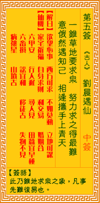

观音灵签第五签 【刘晨遇仙】 |
 | |||
一锄掘地要求泉 努力求之得最先 无意俄然遇知己 相逢携手上青天 |
||||
| 【吉凶】 | 中平签 | 【宫位】 | 子宫 | |
| 【签语】 | 此卦锥地求泉之象，凡事先难后易也。 | |||
| 【解曰】 | 欲望心事 西方可求 不如莫动 立地可谋 | |||
| 【仙机】 | 此签家宅祈福，自身求财，利交易，婚姻合，六甲安，行人迟，寻人见，田蚕宜早种，六畜损，讼宜和，移徙吉，失物不见，病禳星，山坟吉。 | |||
| 【详解】 | 想要靠一支锄头挖得泉水，必定要非常努力才有可能得到;积极努力奋斗，在无意间遇到了伙伴知己，互相帮助合作，必定可以成功，携手共创前程。 望中心事，今可方求，百事营谋，立地堪求。此签堀土求泉之象，凡事劳心成就。 一锄掘地妥求泉水。此象则表征君之运途。是凡事谋略之后。劳心方有成就者也。努力向前必有化凶为吉之时。自励奋斗。偶然遇知己。彼时即是君尔。得贵人之 刻。在伊人扶持下。必能上青天矣。 此签有”休戚相关”之意。意味当事人，推诚相与。有些人为了打响自己的招牌，不惜砸下重金投资，或认为”外来的和尚会念经”，宁可大量对外延揽人才。却 不知许多人才或资源也许近在眼前，却被忽视而浑然不觉。须知要巩固长久的名声不坠，还是必须一步一脚印、从自身做起。无论士农工商，如能以身作则、不耻 下问，对自己身边的人谦恭有礼、善待有佳，给予优渥良好的福利，让其无后顾之忧，自然会吸引更优秀更杰出的人才慕名而来。凡事只要稳扎稳打、用心经营， 相信无须劳心费力，自然有口皆碑，声名远播。 | |||
| 【典故】 | 东汉朝时代人。永平年间，刘晨和阮肇国二人进入天台山采药，遇二仙女，颜色绝丽，邀请刘晨和阮肇国至女家，食以胡麻饭，同结为夫妻。住了约半年，二人要求回家，到家后才知道子孙已过了七世了（约百多年时间）。二人再回去找仙女，终找不到原路。刘羲庆：幽明录《长生乐》传奇 | |||